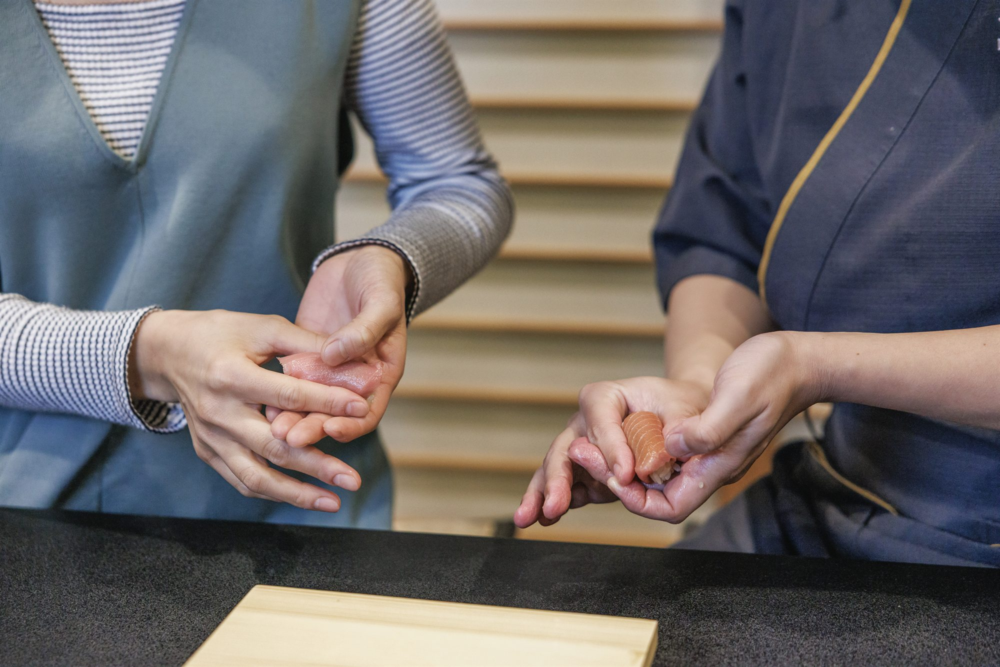
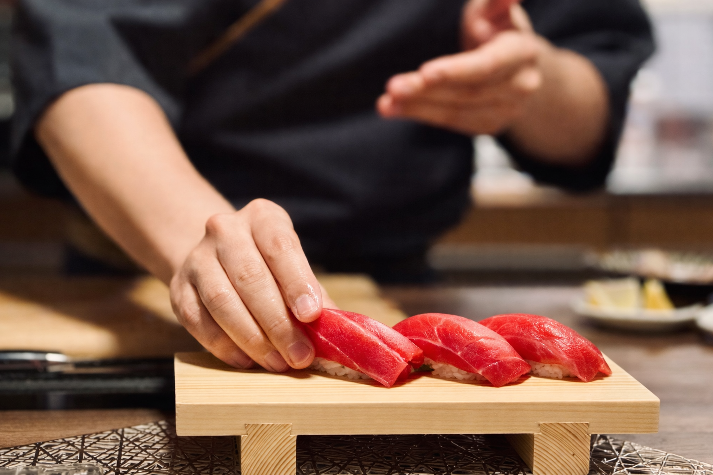
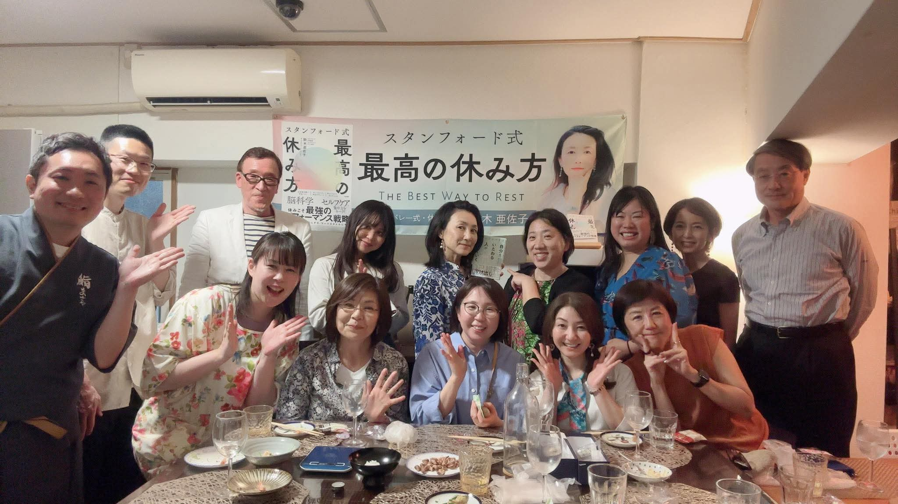
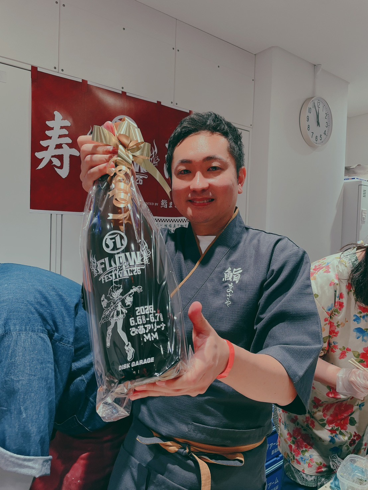
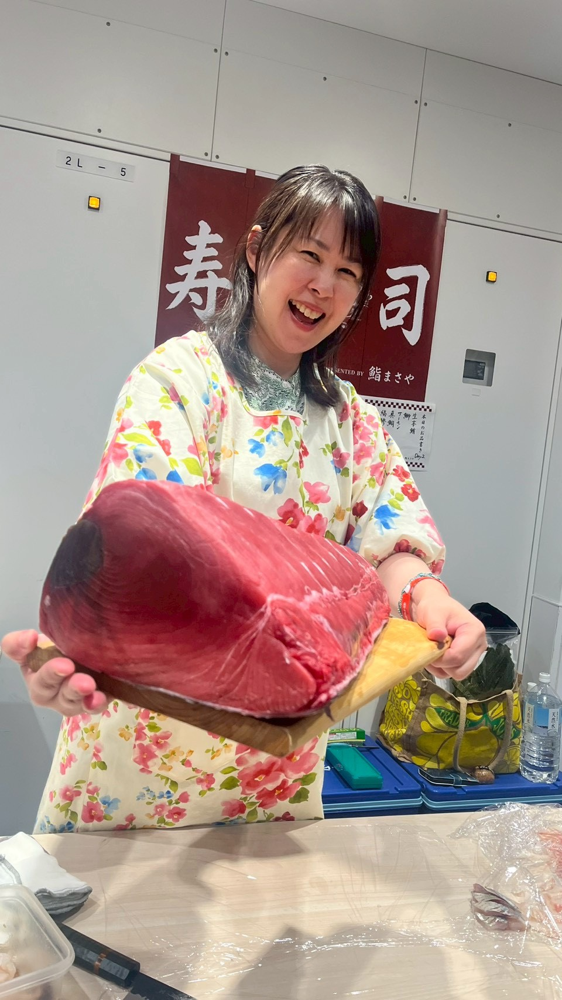

- 日時
- 10月20日（火）13:00〜15:30
- 会場
- 原宿（北参道駅 徒歩3分）
- 定員
- 12名（5名以上で開催）
- 参加費
- 13,000円＋出張費（人数で案分）
鮨リトリートとは？
鮨まさやが主催する、鮨握り体験交流会の特別版です。
いつもの交流会とは違い、「握ること」を通じて、五感のリセットと、最高の休み方を体験していただく時間をご用意しました。
やることは、とてもシンプルです。

仕入れた新鮮なネタを前にして、見よう見まねで鮨を握ってみる。
酢飯の温かさと香り。手に残る感触。
気づくと、さっきまで頭にあった仕事のことや日常の悩みが消えています。
そして、隣の方が握った鮨を食べてみる。
自分が握ったものを誰かが食べて、「美味しい！」と言ってくれる。このやりとりが、想像以上に心地良いんです。
ABOUT
「鮨まさや」について
2025年に紹介制の鮨会として始まりました。
コンセプトは、「鮨を通じて分かち合い、ご縁を紡ぐ」。参加者が一品を持ち寄り、鮨を囲みながら語り合う。そんなお裾分け文化が自然と育ち、SNS集客なしの口コミだけで毎回満席が続いています。

面白いのは、同じネタ、同じシャリを使っても、握る方によって味が変わること。技術の差だけでは説明がつきません。
これまで鮨握り体験交流会を重ねてきて気づいたのは、「握る」というプロセスそのものが、人と人との距離を自然に縮めているということでした。
初めましての方同士でも、鮨を握っていると不思議と会話が生まれます。手を動かしているから沈黙も気まずくならないし、「これ美味しいですね」がそのまま対話になる。
過去の開催実績

2026.4.28 鮨リトリート
鮨リトリートは、今回が初めてではありません。4月には、アメリカ在住の作家・鈴木亜佐子さんを特別ゲストに迎えて開催しました。
鈴木 亜佐子さん
作家・スタンフォード大学認定コンパッションアンバサダー
著書『最高の休み方』ほか
体験された方の声
鮨握り体験交流会に参加された方の声です。
-
「回転寿司とは全く別物でした。自分の手で握るからこそ、ネタの味が分かる。」
30代女性／IT企業勤務 -
「気づいたら3時間経っていました。これだけリラックスできたのは久しぶりです。」
40代男性／経営者 -
「人見知りなのですが、握っているうちに自然と話せるようになっていて驚きました。」
30代女性／フリーランス
開催概要とお申し込み
| 日時 | 2026年10月20日（火）13:00〜15:3012:45開場 |
|---|---|
| 定員 | 12名（5名以上で開催） |
| 会場 | 優【You】BASE 原宿サロン東京都渋谷区千駄ヶ谷3丁目 詳細住所は参加確定後にご案内します。 |
| アクセス | 東京メトロ副都心線 北参道駅 徒歩3分JR原宿駅・明治神宮前駅・代々木駅・千駄ヶ谷駅から徒歩10〜13分 |
| 参加費 | お1人 13,000円 ＋ 出張費10,000円（参加人数で案分） |
| 参加人数 | お1人あたり |
|---|---|
| 5名 | 15,000円 |
| 6名 | 14,670円 |
| 8名 | 14,250円 |
| 10名 | 14,000円 |
| 12名 | 13,840円 |
無料キャンセルで人数が減った場合の差額は、下の「キャンセルについて」をご確認ください。
申し込み後の流れ
- 10月13日（火）23:59 募集締切下のボタンからフォームでお申し込みください。
- 10月14日（水）以降 人数と会費の確定確定した人数と会費を、銀行振込のご案内としてメールでお送りします。
- 10月16日（金）23:59 振込期限期限までにお振込みください。
- 10月17日（土）以降 詳細住所のご案内入金確認済みの方に、詳細住所と当日のご案内をメールでお送りします。
| 連絡の日 | キャンセル料 |
|---|---|
| 10月14日（水）まで | 無料 |
| 10月15日（木）〜16日（金） | 50% |
| 10月17日（土）〜19日（月） | 80% |
| 10月20日（火）当日 | 100% |
お問い合わせ・キャンセルのご連絡は、申し込み後にお送りするメールへの返信でお願いします。
主催者紹介

鮨まさや大将 ／ プロデューサー
後藤 将哉Masaya Goto
13年間の会社員生活を経て、メンタルダウンをきっかけに未経験から鮨職人へ。
「鮨は最上級のコミュニケーションツール」を軸に、紹介だけで満席が続く「鮨まさや」を主宰。言葉にならない本音を対話で引き出し、言語化することを得意とする。

会場オーナー ／ 居場所づくり
和田 優喜子Yukiko Wada
自宅に年間のべ700人が集まる「帰ってきたくなる場所」を育てた、究極の人たらし。
原宿のプライベートサロンでは、人と人が自然につながる居場所を作ってきた。「安心して話せる雰囲気づくり」で鮨まさやを支える女将。日本酒が大好き。
よくあるご質問
鮨を握ったことがないのですが……
問題ありません。むしろ初めての方がほとんどです。大将と女将が横にいますので、見よう見まねで握れます。うまく作る必要はありませんし、正解もありません。
一人でも参加できますか？
もちろんです。鮨を握っていると自然に会話が生まれますので、おひとりでいらしても全く浮きません。
お酒を飲まないのですが……
ノンアルコールの持ち寄りで大丈夫です。お水とお茶はこちらで用意します。
無料キャンセルで人数が減ると、参加費はどうなりますか？
出張費は、10月14日までの無料キャンセルで減った人数を除いて、あらためて参加者で分けます。すでにご案内した振込額はそのままです。増えた分の差額は、事前にお知らせしたうえで当日にお支払いいただきます。
例：6名で14,670円とご案内したあと、1名が無料キャンセルして5名になった場合、当日の差額は330円です。有料キャンセルが出た場合は、他の参加者に追加のご請求はしません。
5名に満たなかった場合は？
5名以上で開催します。5名に満たない場合は、確定のご案内の前に主催からご連絡します。